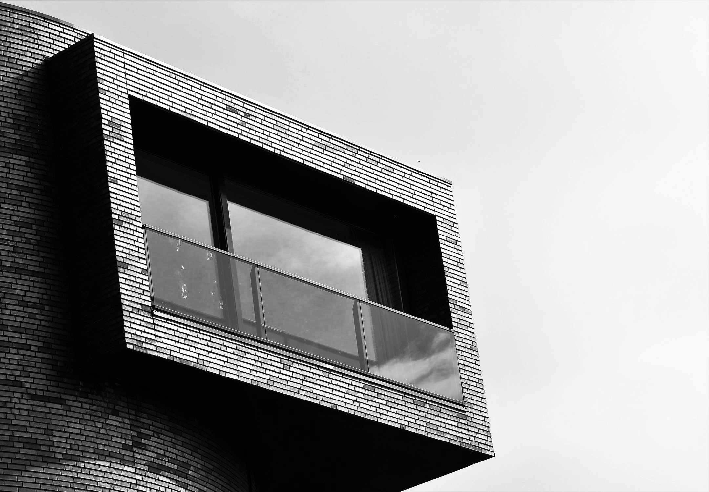

Agende Agora
Descubra a rica história da Inglaterra e reserve suas férias agora.

QUESTÕES GERAIS
Tem alguma questão sobre a sua reserva? Contate-Nos

Boletim Informativo
Inscreva-Se
Assine nosso boletim eletrônico mensal para receber as últimas notícias e ofertas.

Solicite Uma
Brochura
Inspire-se para suas próximas férias na história com nosso folheto anual.